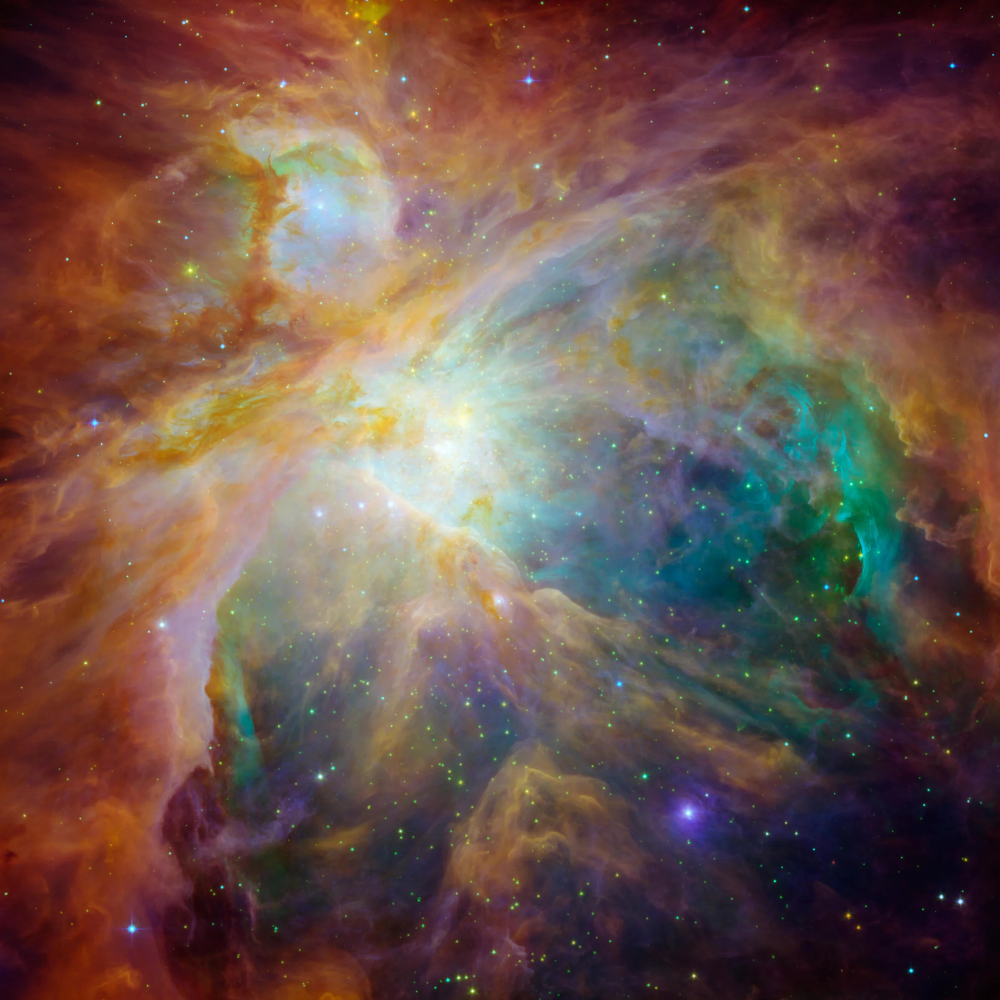

1864
哈金斯分析猫眼星云的光谱，明亮的发射线为它的气体性质提供证据。
NEBULAE
星云的颜色，从哪里来？
星云是星际空间中的气体和尘埃云。
气体发光，尘埃散射星光；望远镜还记录着人眼看不见的波段。绚丽的颜色，就从这些光中显现。
气体主要由氢和氦组成。恒星的辐射让气体发光；尘埃则遮挡、散射星光，也在红外波段留下自己的信号。
当云中足够致密、质量足够大的部分在引力作用下坍缩，就可能诞生新的恒星。
这是我们观测宇宙的起点。
在足够暗的夜空，猎户座大星云肉眼可见，呈现为一块朦胧的亮斑。
照片里的细节与颜色，需要望远镜的集光能力、长时间曝光，以及不同波段的观测，才能逐渐显现。

猎户座星云 · 哈勃与斯皮策合成
哈金斯分析猫眼星云的光谱，明亮的发射线为它的气体性质提供证据。
德雷珀拍下猎户座星云，一次曝光持续了 50 分钟。
哈勃升空，绕开地球大气湍流，记录更清晰的宇宙细节。
韦布发布首批科学影像，用红外观测揭示更多被尘埃遮挡的结构。
气体的发光，尘埃的散射，
还有被转译成颜色的红外信号。
轻触一团光，看看颜色从何而来。
从地球出发，按距离由近及远 · 分布于不同天区
从一颗行星，继续向外。
恒星之间，云气绵延。
星云，只是星系中的一小部分。
更远处，还有无数星系。